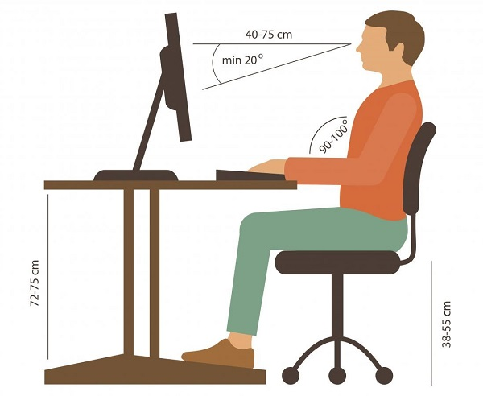

Pozycja siedząca nie jest dla człowieka naturalną pozycją.
Nie został on stworzony do tej pozycji.
Najlepszym wyjściem jest mieszanie stylów pracy, np. siedzenie przy komputerze by wprowadzić dane,
ale większość dnia spędzać choćby na hali produkcyjnej, robiąc coś stojąc
Znacząco jest zwiększone obciążenie kręgosłupa i mięśni
grzbietu (w porównaniu z pozycją stojącą).
Najbardziej cierpimy przez:
– Wzrastająca intensywność pracy,
– Brak przerw w pracy,
– Konieczność długotrwałej pracy w statycznej pozycji wymuszonej.
Przerwy są niezbędne, zwłaszcza przy długotrwałej pracy przy komputerze,
by móc rozprostować nogi, dać odpocząć oczom, posilić się i wiele innych
Poprawna postawa:
